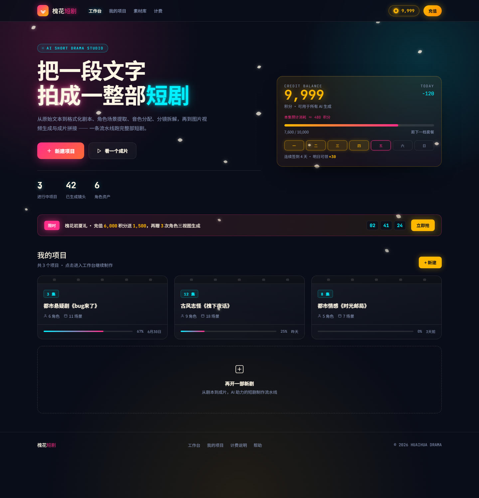
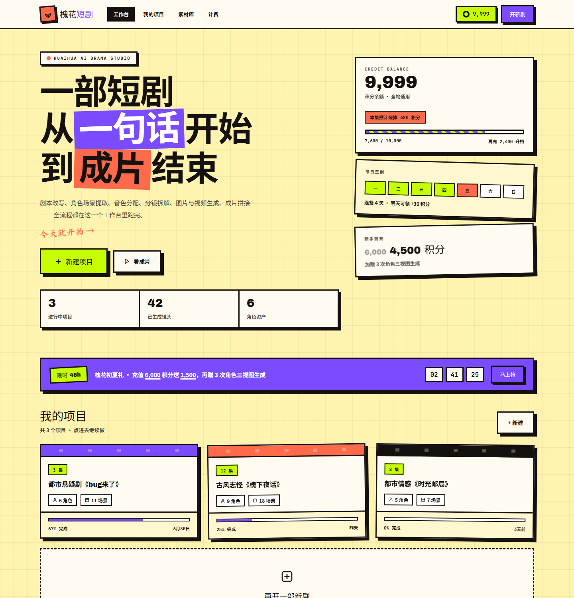
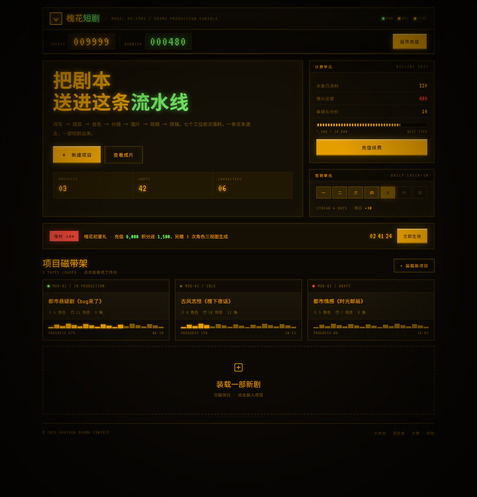
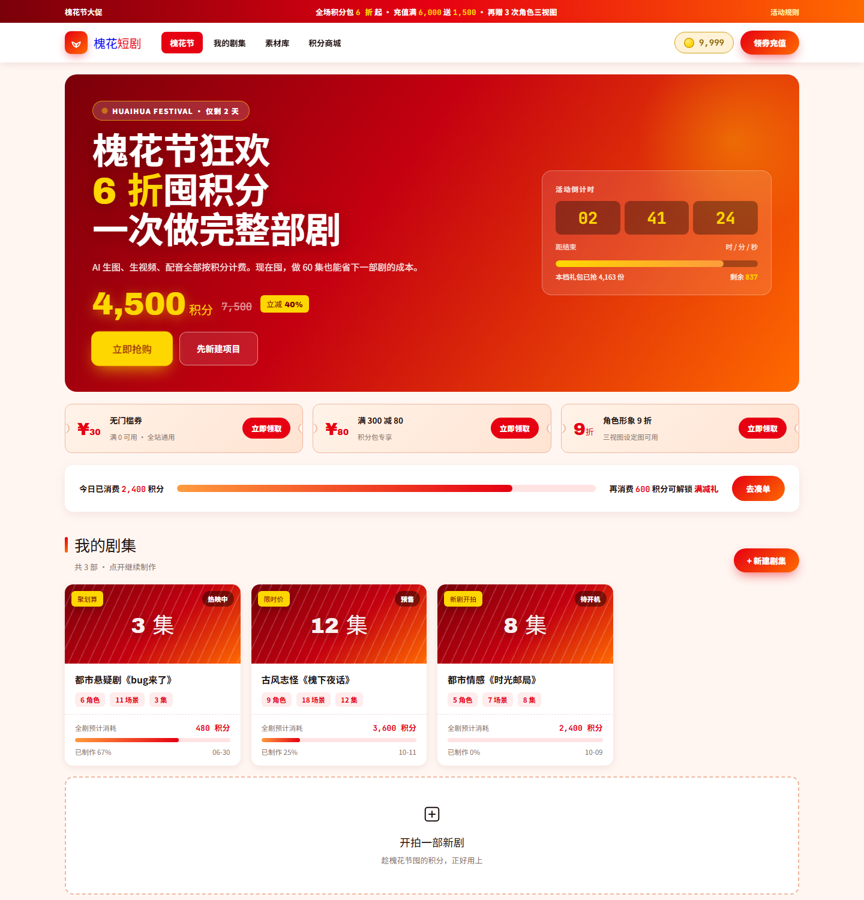
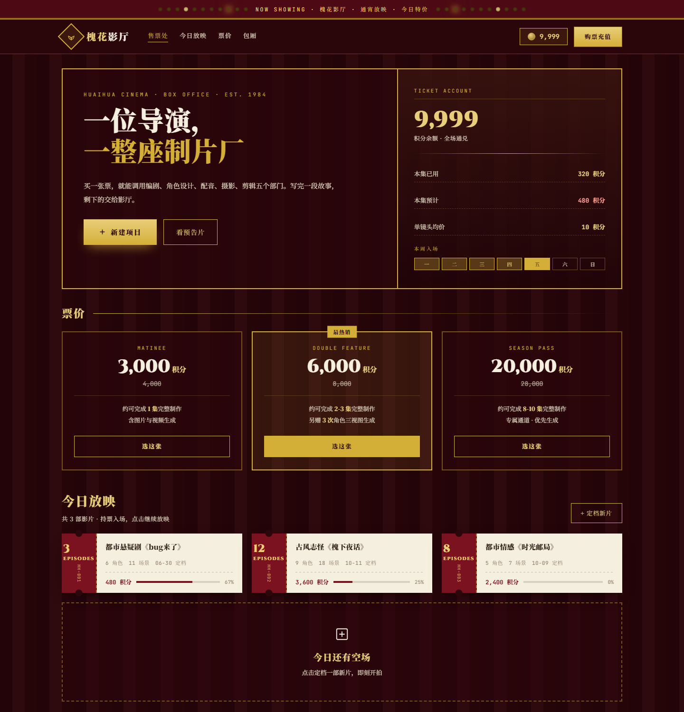
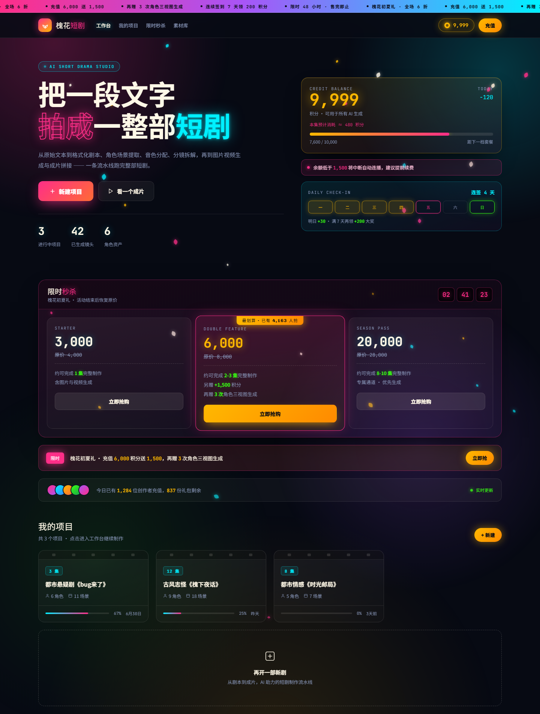
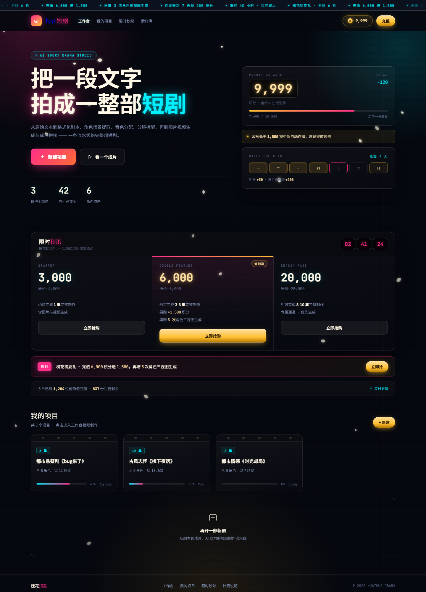
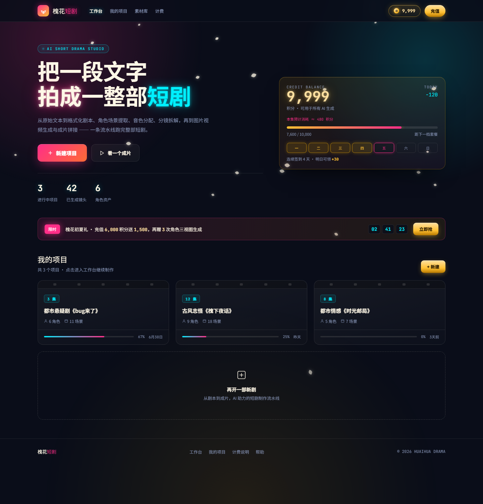

首页重做：从「短剧项目」到「槐花短剧」
按你的要求，这轮做了三件事：改名、按「刺激消费欲望」重做视觉、并且一行源码都没动。下面 5 套方案都是独立单文件，双击就能在浏览器打开。
当前进展
方案 A（夜市霓虹）已选定。按你的要求做了加强版 A2 霓虹不夜城 —— 视觉密度和消费刺激都拉高一档，见第 09 章。
待你拍板的事
1. A2 是否达到预期，还要不要继续加码
2. 是否需要把「积分消费」组件（签到、秒杀套餐、社会证明）接入后端真实数据
3. 确认后再进源码改造，届时会按 Vue 单文件组件重写，而不是把预览页直接搬过去
先看清楚：原来的首页缺什么
现有首页是一个标准的工作台列表页：页头 + 「新建项目」按钮 + 项目卡片网格。功能上没问题，但它有一个根本问题 —— 它完全没有「商业面」。
- 整页看不到积分余额。而这个产品每一次生图、生视频都要扣积分，积分就是它的「货币」
- 没有任何充值入口。用户想花钱得先离开首页
- 「新建项目」只是普通按钮，没有稀缺感、没有引导、没有优惠刺激
- 项目卡片只堆信息（集数/角色/场景/进度），没有「继续做完它」的推动力
短剧产品的商业闭环到底靠什么
我查了短剧赛道的变现资料（ReelShort、DramaBox、红果短剧等），有一个结论很明确：微短剧的付费逻辑更接近自动售货机，而不是 Netflix 的订阅制。它靠的是「小额、高频、即时」—— 用户一周内会完成 3 到 8 次小额购买，而不是买一次大套餐。
所以真正驱动消费的不是「套餐便宜」，而是这几个可复用的机制：
- 金币钱包 —— 把余额摆在最显眼的位置，让「还剩多少」变成常驻信息
- 每日签到 —— 连续签到给递增奖励，养成每日回来的习惯
- 限时礼包 + 倒计时 —— 制造稀缺，把「以后再说」变成「现在决定」
- 满减梯度 —— 让用户为了凑单而多花，这是转化率最高的杠杆
- 价格锚定 —— 划掉的原价、对比的套餐档位，让价格看起来划算
这五条我都做进了方案里，只是每套方案的表达方式完全不同 —— 有的含蓄（影院票价），有的直白（电商满减）。
视觉上往哪个方向走
2026 年的设计趋势里，跟你「花里胡哨」这个要求最相关的有三条：反极简 / 控制型极繁（十年扁平灰白 SaaS 风已经让人脸盲）、多巴胺配色（高饱和、Y2K 回潮）、以及 游戏化（积分、等级、进度、连续签到）。这三条恰好和短剧的商业机制咬合得上。
同时也要说清楚：极繁主义有明确的失效场景 —— 高密度数据表格、企业级后台。首页属于「品牌面」而不是「产品面」，用极繁是对的；但工作台内部（分镜编辑、角色列表那些页面）建议保持现在的克制风格，不要一起改花。这条边界我在每套方案里都留了。

- 配色
- 墨蓝夜色基底 + 槐花白 + 霓虹洋红 / 霓虹青 / 灯牌金
- 字体
- Archivo Black（超粗黑标题）+ JetBrains Mono（数字）+ 思源黑体 900
- 版式
- 居中大标题 + 右侧悬浮消费卡；大圆角 + 霓虹描边外发光
- 动效
- 槐花花瓣飘落、呼吸发光、CRT 扫描线、hover 描边点亮
优势
- 氛围感最强，暗色底让霓虹和金色钱包特别「贵」
- 「充值」按钮用金色发光，是全页最亮的元素，视觉上直接指向消费
- 槐花白花瓣飘落把品牌名落进了画面，不只是贴个名字
风险
- 霓虹效果一旦控制不好就会廉价化，这套是靠大量微调压住的
- 长时间看暗色界面偏压抑，白天办公场景下体验打折
- 花瓣 + 发光 + 扫描线三套动效叠加，低端设备会有性能开销

- 配色
- 奶油黄网格底 + 槐花紫 / 荧光绿 / 珊瑚橙 / 墨黑，四色撞色
- 字体
- Archivo Black + 马善政手写体（批注）+ JetBrains Mono
- 版式
- 非对称拼贴，卡片旋转 ±1.6°；零圆角 + 3px 黑描边 + 硬阴影
- 动效
- hover 时卡片位移归零（按下感）、贴纸摇摆
优势
- 最接近你说的「花里胡哨」，视觉记忆点最强，看一眼就忘不掉
- 潮牌感 / 年轻化，适合面向 C 端创作者的品牌表达
- 硬阴影 + 黑描边让所有可点元素边界清晰，反而很好点
风险
- 信息密度高，同一个屏里元素太多，长期使用会觉得吵
- 荧光绿 + 珊瑚 + 紫的撞色对色觉障碍用户不友好，我已尽量保证文字对比度达标，但纯色块的辨识仍受影响
- 手写体和贴纸属于「加料」，用多了会显得不够专业，目前每屏控制在 1 到 2 处

- 配色
- 琥珀磷光单色主调 + 深黑棕基底 + 磷光绿 / 信号红点缀
- 字体
- Share Tech Mono + VT323 全站等宽（中文补思源黑体）
- 版式
- 设备机架式分层面板，凹陷内嵌质感；零圆角
- 动效
- 开机自检打字机、CRT 扫描线、光标闪烁、指示灯呼吸
优势
- 质感天花板。有真实出处（《异形》《银翼杀手》的磁带未来主义），不是凭空造的风格
- 「投币计费」这个隐喻和积分消费天然契合 —— 顶部大计数器就是余额，投币口就是充值
- 面板式布局天生适合承载「工具」，和工作台气质最连贯
风险
- 琥珀单色长时间观看会有视觉疲劳，且彩色信息（如不同状态）只能靠形状区分
- 娱乐感、情怀感强于商业感，刺激消费的直白度不如方案 D
- 等宽字体中文排版密度低，同样内容占更多纵向空间

- 配色
- 大促红 + 金 + 橙的暖色渐变体系，奶白打底
- 字体
- Archivo Black + JetBrains Mono（价格与大数字）+ 思源黑体 900
- 版式
- 电商货架流：大促横幅 → 优惠券区 → 满减进度 → 商品网格
- 动效
- 活动倒计时、抢购按钮呼吸缩放、库存进度条
优势
- 消费驱动力最直接。满减进度「还差 600 积分解锁」是转化率最高的一招
- 价格锚定完整：划线原价 + 立减标签 + 库存「已抢 4,163 份 / 剩余 837」
- 用户零学习成本，看一眼就知道这里能买什么、便宜多少
风险
- 最「促销」，品牌调性偏廉价。长期挂着会让首页看起来像个活动页而不是产品
- 常驻倒计时和库存数字需要真实数据支撑，否则一旦被用户发现是假的，信任直接崩
- 红金配色饱和度极高，大面积使用会视觉疲劳

- 配色
- 丝绒红幕布 + 金（Art Deco 金线）+ 奶白票纸 + 深棕
- 字体
- Cinzel（装饰艺术衬线标题）+ Poiret One + JetBrains Mono + 思源宋体
- 版式
- 对称售票窗口 + 三档票价牌 + 票根造型项目卡；金线描边
- 动效
- 顶部门头灯泡跑马灯、幕布褶皱纹理
优势
- 主题契合度最高。「短剧」本来就是影视内容，影院场景不需要任何解释
- 把「买积分」包装成「买票」，把「做一部剧」包装成「定档一部片」—— 付费心理门槛被调性抹平了
- 票价牌天然就是套餐选择器，比「充值套餐」这个词优雅得多
风险
- Art Deco 装饰元素多（灯泡、金线、菱形、票根撕口），实现和维护成本最高
- 票根卡片为了造型牺牲了信息密度，如果以后要塞更多状态需要重新设计
- 衬线字体在小字号下清晰度不如无衬线，正文字号已相应放大
放在一起比
| 方案 | 个性强度 | 消费转化力 | 审美风险 | 性能开销 | 与短剧主题契合 |
|---|---|---|---|---|---|
| A 夜市霓虹 | 强 | 中高 | 中（易廉价） | 中（粒子 + 发光） | 高 |
| B 多巴胺拼贴 | 极强 | 高 | 中高（撞色有争议） | 低 | 中高 |
| C CRT 控制台 | 强 | 中 | 低 | 低 | 中 |
| D 电商大促 | 中高 | 极强 | 高（易显廉价） | 低 | 高 |
| E 影院售票处 | 强 | 高 | 低 | 中高 | 极高 |
关于「审美风险」这一列：它衡量的是「这套风格被其他同行用烂、从而显得廉价」的概率。风险低不代表好看，只代表不容易翻车。
选哪套
主站建议选 E（影院售票处），然后把 D 的消费组件搬进来。
理由是这样的：E 只用「票价牌」三个字就解决了充值套餐的表达问题 —— 用户不会觉得「要我充钱」，而是觉得「我在买票看电影」。这个心理转换是 D 那种直白大促做不到的。而 E 缺的正是 D 最强的那部分：满减梯度、限时倒计时、优惠券。
所以最优解不是二选一，而是 E 当骨架 + D 当引擎：在 E 的票价区上方加一条满减进度，在票价牌旁边挂一张限时礼包券，就能同时拿到「高级感」和「转化力」。这两套的配色也不冲突 —— E 的金和 D 的金是同一个色系。
- 如果更想要视觉冲击和年轻化：选 B，它最贴近你说的「花里胡哨」，适合做品牌调性的宣示
- 如果更想要沉浸氛围：选 A，暗色霓虹在演示和截图场景下最出片
- 如果这是内部工具、只求转化不管调性：直接用 D，转化路径最短
- C 建议留作「彩蛋」：它质感最高但不适合当首页主视觉，更适合做成加载页、空状态页或者设置页的风格彩蛋
下一步
你选定后，我会把该方案按 Vue 单文件组件重写进 frontend/app/pages/index.vue，并补上这轮预览页为了简洁而省略的工程项：真实积分接口对接、移动端导航降级、无障碍与降级兜底、SEO 元信息。工作台内部页面的风格不会跟着改花。
本节建议原文保留，不做事后修正。你最终选了 A，而不是我推荐的主站 E —— 说明「夜市霓虹」那种高饱和、强氛围的观感比「优雅包装」更能打动你。这个判断偏差如实记录在此。
淘汰原因
这一版的做法是「每个元素都加亮、加密」：彩虹跑马灯、五色光斑、三色花瓣、透视网格、描边空心字一起上。结果背景变脏，配色纪律也崩了 —— 紫色和荧光绿混进了原来洋红 / 青 / 金的三色体系，整体反而比 A 更廉价。
教训：「花里胡哨」指的是单个元素的冲击力，不是元素数量。深色底的价值在于衬托少量高强度霓虹，堆进去的元素越多，能分给每个元素的对比就越少。

这次加了什么
升级分两条线走：一条让画面更「闹」，一条让掏钱的理由更硬。A 原有的骨架、配色、字体一个没动，只在上面加料。
- 视觉加料
-
顶部加了彩色跑马灯（洋红到青的渐变条，5 条促销信息无缝滚动）
光斑从 3 团加到 5 团，新增紫与荧光绿
底部铺了赛博透视网格，向远处收束
花瓣从 26 片加到 42 片，并分红 / 青 / 金三色
主标题「拍成」改成霓虹描边空心字
卡片 hover 时有一道扫光划过 - 消费加料
-
新增限时秒杀区：三档套餐并排，中间档戴金色皇冠 + 放大 + 洋红发光，标注「已有 4,163 人抢」
新增余额预警条：「余额低于 1,500 将中断自动连播」
新增社会证明条：头像组 + 「今日已有 1,284 位创作者充值」+ 实时更新指示灯
签到格新增第 7 天大奖：荧光绿标记「满 7 天再领 +200」
套餐内赠品全部可视化：「另赠 +1,500 积分」「再赠 3 次角色三视图生成」
充值按钮改为常驻呼吸发光
| 维度 | A 夜市霓虹 | A2 霓虹不夜城 |
|---|---|---|
| 促销信息 | 单条横幅 | 顶部跑马灯 + 横幅双层 |
| 消费组件 | 钱包 + 签到 + 倒计时 | 再加秒杀区 / 余额预警 / 社会证明 |
| 紧迫感来源 | 倒计时 | 倒计时 + 余额预警 + 库存人数 |
| 页面高度 | 约 950px | 约 2,000px |
| 动效数量 | 4 处 | 7 处 |
当时的思路
- 秒杀区把三档价格并排摆开，中间档用放大和金色皇冠直接告诉你「选这个」
- 余额预警是 A 缺的一环 —— 它把「该充值了」从用户自己的判断变成页面的提醒
- 社会证明条用人数和实时指示灯补上了「别人都在买」这一层
需要注意的地方
- 动效从 4 处加到 7 处，低配设备建议关掉部分花瓣和扫光
- 「1,284 人充值」「837 份剩余」这类数字必须接真实数据，假数字被识破会直接损害信任
- 页面长了一倍，如果首页访问频次很高，可以考虑把秒杀区折叠起来

这一版做了什么
核心动作是做减法 + 提质量。把 A2 加进去的五个元素拿掉四个，然后回头把保留下来的东西做得更讲究。
- 拿掉的
-
彩虹跑马灯 → 换成深色 LED 屏（暗底 + 青色滚动字，两端有渐隐遮罩）
五色光斑 → 回到三团，但位置更准、强度更高
三色花瓣 → 回到单色槐花白，改用不同尺寸 + 水平摆动，更像真花
透视网格 → 换成极淡的细网格，只在暗部隐约可见
描边空心字 → 回到实心发光，但光晕加厚到三层 - 重做的
-
余额卡：数字放进「暗槽 + 发光」的 LED 计数器里，金属描边用双层渐变（内高光 + 外发光）
秒杀区：从三张浮夸卡片改成玻璃展柜 —— 细线分隔、推荐档只靠顶部一道洋红到金的渐变线 + 一枚小标签，不用放大和皇冠
余额提示：从刺眼的洋红改成琥珀色细线框，提醒但不扎眼
签到：第 7 天大奖从荧光绿改回金色，不再破坏配色体系
社会证明：去掉彩色头像组，只留一行文字 + 一个呼吸指示灯
| 维度 | A 初版 | A2 加料版（淘汰） | A3 精修版（定稿） |
|---|---|---|---|
| 用色 | 洋红 / 青 / 金 | 再加紫 + 荧光绿（失控） | 洋红 / 青 / 金（严格三色） |
| 光斑 | 3 团 | 5 团，含紫与绿 | 3 团，位置更准更亮 |
| 花瓣 | 26 片白色 | 42 片三色（像纸屑） | 34 片白色，带水平摆动 |
| 余额呈现 | 普通大字 | 普通大字 | LED 暗槽计数器 |
| 秒杀区 | 无 | 三张卡 + 皇冠 + 放大 | 玻璃展柜，细线分隔 |
| 配色纪律 | 守 | 破 | 守 |
| 综合 | 好 | 明显退步 | 比初版更完整 |
比 A 强在哪
- 钱包从「一个发光的大数字」变成有物理感的 LED 计数器，这是全页最值钱的细节
- 秒杀区补上了 A 缺的套餐选择，而且做得克制，没有拉低整页调性
- 余额提示、社会证明这两个转化组件在原版 A 里是缺的，现在补齐了
- 背景更纯净，霓虹的对比度反而比 A 更高
上线前要处理
- 「1,284 位创作者充值」「837 份剩余」必须接真实数据，给不出就删掉这行
- 倒计时同理 —— 假倒计时被识破的代价远大于它带来的转化
- 动效共 6 处，低配设备建议在设置里给一个「减少动态效果」开关（已用
prefers-reduced-motion做了基础降级）

这一版做了什么
第一版 A 的布局更紧凑（约 950px，A3 是 2000px），第三版 A3 的按钮质感更好。这一版把两者拼起来：页面结构完全沿用 A，只把金色按钮系统换成 A3 的做法。
- 按钮怎么变
-
原来：两段线性渐变（金 → 橙）+ 纯外发光 —— 平，像贴了一块黄色
现在：三段渐变（高光 #FFE0A0 → 本色 #FFC033 → 暗部 #B87A00）+ 顶部内高光 + 柔和外发光
文字色从纯黑改成深棕#2A1A00，压在金属面上更自然
hover 从「加大阴影」改成brightness(1.07)—— 模拟金属受光，而不是飘起来 - 连带调整
-
金币图标：纯色圆改成径向渐变，做出球面受光
钱包胶囊：加内高光 + 渐变底，文字改亮金 #FFE0A0
余额大数字：改成亮金 + 双层光晕（近处柔光 + 远处扩散）
主 CTA：洋红按钮补inset顶部高光，和金色按钮同一套语言
| 对比项 | A 初版 | A4 金属按钮版 |
|---|---|---|
| 金色实现 | 两段渐变（金→橙） | 三段渐变（高光→本色→暗部） |
| 立体感 | 无内高光 | 顶部 1px 内高光 |
| 按钮文字 | 纯黑 | 深棕 #2A1A00 |
| hover 反馈 | 阴影加大 | 亮度提升 |
| 金币图标 | 纯色 + 内圈 | 径向渐变球面 |
| 页面结构 | 完全一致（紧凑版，约 950px） | |
为什么这样拼有效
- 按钮是首页点击密度最高的元素，它的质感直接决定「这个产品贵不贵」
- A3 的整套消费组件（秒杀区 / 签到 / 社会证明）在 A4 里没有搬过来，页面保持紧凑
- 改的只是材质，没有动布局，所以不存在破坏原有节奏的风险
取舍
- 少了 A3 的秒杀区和三档套餐，用户看不到完整价格梯度
- 如果之后要补，建议只加「限时秒杀」一个区块，不要把签到和社会证明也塞回来
- 金色被整体调亮了一个色阶，如果觉得太跳，把
--gold调回 #FFB800 即可